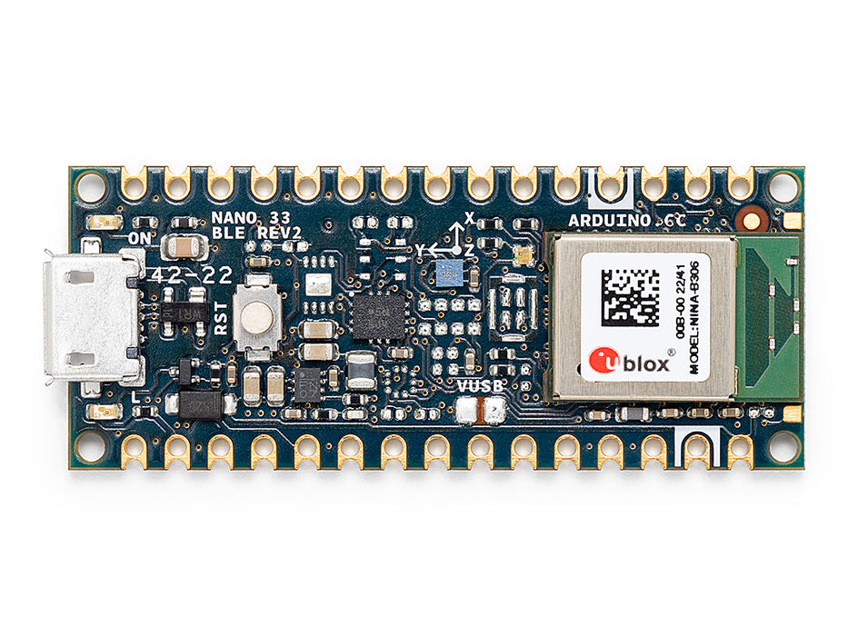

Arduino Nano 33 BLE Sense¶
تحذير
لم يعد هذا اللوح مدعومًا. آخر إصدار من برنامج OpenMV الثابت للوح Arduino Nano 33 BLE Sense هو 4.7.0. لن تصدر أي تحديثات إضافية للبرنامج الثابت أو إصلاحات للأخطاء أو ميزات جديدة لهذا الهدف. المعلومات أدناه محفوظة للمستخدمين الذين يشغّلون الإصدار 4.7.0 أو الإصدارات الأقدم.
إن لوح Arduino Nano 33 BLE Sense هو لوح بحجم 45 × 18 ملم بعامل شكل Arduino‑Nano مبني حول شريحة Nordic Semiconductor nRF52840 — وهي معالج ARM Cortex‑M4 وحيد مزود بوحدة فاصلة عائمة (FPU) يعمل بتردد 64 ميجاهرتز مع 256 كيلوبايت من ذاكرة SRAM الداخلية و1 ميجابايت من ذاكرة الفلاش الداخلية. تأتي تقنية BLE من الراديو المدمج في الشريحة، ويحمل اللوح وحدة قياس بالقصور الذاتي (IMU) بتسعة محاور، ومقياس ضغط جوي LPS22HB، ومستشعر درجة حرارة/رطوبة HTS221 / HS3003، ومستشعر الضوء المحيط/اللون/القرب/الإيماءات APDS9960، وميكروفون PDM من نوع MP34DT05. يشغّل برنامج OpenMV الثابت كل هذه المكونات من MicroPython.
{kind=link}

للاطلاع على ورقة البيانات الكاملة والصور والأبعاد، راجع صفحة منتج Arduino Nano 33 BLE Rev2.
أبرز المميزات¶
Nordic nRF52840 معالج Cortex‑M4 مزود بوحدة FPU بتردد 64 ميجاهرتز مع 256 كيلوبايت من ذاكرة SRAM الداخلية و1 ميجابايت من ذاكرة الفلاش الداخلية.
Bluetooth LE 5.0 عبر الراديو المدمج في الشريحة وبرنامج Nordic SoftDevice s140.
وحدة IMU بتسعة محاور —
LSM9DS1في الإصدار Rev 1، وBMI270+BMM150في الإصدار Rev 2. يفحص المشغّل المجمّدimuكليهما عند الإقلاع.مقياس ضغط جوي
LPS22HB، ومستشعر درجة حرارة ورطوبةHTS221/HS3003، ومستشعر الضوء المحيط/اللون/القرب/الإيماءاتAPDS9960، وميكروفون PDM من نوع MP34DT05.موصّل Micro USB للطاقة والبرمجة وREPL عبر CDC.
22 دبوس إدخال/إخراج للمستخدم على ترويسات Nano القياسية —
TX/RX، وD2–D13(رقمية)، وA0–A7(تناظرية).
مخطط الدبابيس¶

مرجع الدبابيس¶
اسم الدبوس |
المرجع |
الوظيفة |
|---|---|---|
TX |
3.3 V |
UART1 TX |
RX |
3.3 V |
UART1 RX |
D2 |
3.3 V |
PWM |
D3 |
3.3 V |
PWM |
D4 |
3.3 V |
PWM |
D5 |
3.3 V |
PWM |
D6 |
3.3 V |
PWM |
D7 |
3.3 V |
PWM |
D8 |
3.3 V |
PWM |
D9 |
3.3 V |
PWM |
D10 |
3.3 V |
PWM |
D11 |
3.3 V |
PWM / SPI0 MOSI |
D12 |
3.3 V |
PWM / SPI0 MISO |
D13 |
3.3 V |
PWM / SPI0 SCK |
A0 |
3.3 V |
ADC / PWM |
A1 |
3.3 V |
ADC / PWM |
A2 |
3.3 V |
ADC / PWM |
A3 |
3.3 V |
ADC / PWM |
A4 / I2C_SDA |
3.3 V |
ADC / PWM / I2C0 SDA |
A5 / I2C_SCL |
3.3 V |
ADC / PWM / I2C0 SCL |
A6 |
3.3 V |
ADC / PWM |
A7 |
3.3 V |
ADC / PWM |
RESET |
3.3 V |
اضغط زر RESET الموجود على اللوح أو اسحب الخط إلى GND لإعادة التعيين |
LED_BUILTIN |
— |
مؤشر LED برتقالي للمستخدم على |
LED_RED |
— |
قناة اللون الأحمر لمؤشر RGB LED (فعّالة عند المستوى المنخفض) |
LED_GREEN |
— |
قناة اللون الأخضر لمؤشر RGB LED (فعّالة عند المستوى المنخفض) |
LED_BLUE |
— |
قناة اللون الأزرق لمؤشر RGB LED (فعّالة عند المستوى المنخفض) |
تحذير
دبابيس الإدخال/الإخراج في لوح Nano 33 BLE Sense تعمل بجهد 3.3 V فقط — فهي غير متحملة لجهد 5 V. إن تطبيق جهد 5 V عليها سيؤدي إلى تلف شريحة nRF52840.
دبابيس الطاقة¶
VIN — دخل بجهد 4.5 – 21 V. يغذّي اللوح عبر المنظّم الموجود على اللوح. ويُغذّى أيضًا عبر صمام ثنائي من خط 5 V الخاص بـ USB، لذا يمكن وجود USB و
VINفي الوقت نفسه دون أن يدفع أحدهما عكسيًا في الآخر.+5V — غير موصّل افتراضيًا.
+3V3 — خرج منظّم الجهد 3.3 V.
AREF — دبوس المرجع التناظري. غير موصّل بشريحة nRF52840 في هذا اللوح — يُرجَع وحدة ADC دائمًا إلى 3.3 V.
GND — الأرضي المشترك.
يمكن تشغيل لوح Nano 33 BLE Sense عبر أي من المسارين:
Micro USB — يوفّر جهد 5 V للمنظّم الموجود على اللوح.
دبوس VIN — طبّق مصدر طاقة منظّم بجهد 4.5 – 21 V.
ملاحظة
هناك وصلة لحام في الجزء السفلي من اللوح مُسمّاة VUSB تجسر بين +5V وخط 5 V الخاص بـ USB. أغلقها لجعل دبوس الترويسة +5V يحمل فعليًا جهد 5 V.
ملاحظة
يمكن قطع وصلة لحام مغلقة افتراضيًا على خرج منظّم الجهد التبديلي 4.5–21 V الموجود على اللوح لتعطيل المنظّم، بحيث يمكن تشغيل اللوح مباشرة من مصدر خارجي بجهد 3.3 V على +3V3.
دبابيس الاستعادة والتنقيح¶
RESET — وسادة مكشوفة وزر RESET لحظي في أعلى اللوح، موصّلان بخط إعادة تعيين شريحة nRF52840. اسحب الخط إلى GND أو اضغط الزر لإعادة التعيين.
يستخدم لوح Nano 33 BLE Sense طريقة النقر المزدوج لإعادة التعيين القياسية من Arduino للدخول إلى محمّل إقلاع Arduino. اضغط زر RESET مرتين بسرعة — يدخل اللوح في وضع محمّل الإقلاع ويمكن لـ OpenMV IDE تحميل صورة برنامج ثابت جديدة.
تظهر إشارات SWD الخاصة بشريحة nRF52840 على وسادات مطلية في ظهر اللوح. جميع إشارات التنقيح مرجعها 3.3 V.
الطرفيات الموجودة على اللوح¶
مؤشرات LED¶
يحتوي لوح Nano 33 BLE Sense على مؤشر RGB LED للمستخدم — يُشغَّل عبر القنوات المطبوعة على اللوح LED_RED وLED_GREEN وLED_BLUE — بالإضافة إلى مؤشر برتقالي منفصل LED_BUILTIN على D13. وجميع الأربعة قابلة للتحكم برمجيًا عبر machine.LED
from machine import LED
LED("LED_RED").on()
LED("LED_GREEN").on()
LED("LED_BLUE").on()
LED("LED_BUILTIN").on()
هناك مؤشر LED أخضر منفصل لـالطاقة على اللوح يضيء كلما كان خط 3.3 V+ نشطًا، وهو غير قابل للتحكم من قبل المستخدم.
مستشعر الكاميرا¶
يدعم برنامج OpenMV الثابت على لوح Nano 33 BLE Sense مستشعر CMOS المتوازي OmniVision OV7670. لا يحتوي اللوح على مستشعر صورة مدمج — صِل وحدة OV7670 بدبابيس الترويسة المطبوعة على اللوح والمدرجة أدناه وشغّلها عبر وحدة csi --- مستشعرات الكاميرا
import csi
cam = csi.CSI()
cam.reset()
cam.pixformat(csi.RGB565)
cam.framesize(csi.QVGA)
cam.snapshot(time=2000) # let auto‑exposure settle
while True:
img = cam.snapshot()
ملاحظة
يستهلك مستشعر OV7670 أربعة عشر دبوسًا. يوصّلها البرنامج الثابت كما يلي:
إشارة المستشعر |
دبوس Nano 33 BLE Sense |
|---|---|
D0 |
|
D1 |
|
D2 |
|
D3 |
|
D4 |
|
D5 |
|
D6 |
|
D7 |
|
HSYNC |
|
VSYNC |
|
PXCLK |
|
MXCLK |
|
POWER |
|
RESET |
|
SCL |
|
SDA |
|
ناقل التحكم I²C الخاص بمستشعر OV7670 هو نفسه ناقل I²C 0 الخارجي المكشوف على A5/A4. يقع المستشعر على العنوان ذي السبع بتات 0x21 — يجب على أجهزة المستخدم على هذا الناقل تجنّب هذا العنوان عند توصيل الكاميرا.
وحدة IMU¶
تُكشف وحدة IMU بتسعة محاور عبر المشغّل المجمّد imu، الذي يكتشف تلقائيًا ما إذا كان اللوح يحتوي على LSM9DS1 (الإصدار Rev 1) أو BMI270 + BMM150 (الإصدار Rev 2)، ويقدّم صنف imu.IMU موحّدًا. تقع المستشعرات على ناقل I²C 1 الداخلي (P14 / P15):
import time
from machine import I2C, Pin
from imu import IMU
bus = I2C(1, scl=Pin("P15"), sda=Pin("P14"))
sensor = IMU(bus)
while True:
print(sensor.accel()) # (x, y, z) in g
print(sensor.gyro()) # (x, y, z) in deg/s
print(sensor.magnet()) # (x, y, z) magnetometer
time.sleep_ms(100)
للوصول المباشر إلى ميزات مثل كشف النقر أو ذاكرة FIFO، استورد المشغّل المجمّد المطابق (lsm9ds1 أو bmi270 أو bmm150) وأنشئ نسخة منه على الناقل نفسه.
المستشعرات البيئية¶
يتشارك مقياس الضغط الجوي (LPS22HB) ومستشعر درجة الحرارة/الرطوبة (HTS221 في الإصدار Rev 1، وHS3003 في الإصدار Rev 2) ناقل I²C 1 الداخلي نفسه مع وحدة IMU:
import time
from machine import I2C, Pin
from lps22h import LPS22H
from hts221 import HTS221
bus = I2C(1, scl=Pin("P15"), sda=Pin("P14"))
lps = LPS22H(bus)
try:
hts = HTS221(bus)
except OSError:
from hs3003 import HS3003
hts = HS3003(bus)
while True:
print("pressure: %.2f hPa" % lps.pressure())
print("temperature: %.2f C" % lps.temperature())
print("humidity: %.2f %%" % hts.humidity())
time.sleep_ms(500)
الضوء / اللون / القرب / الإيماءات¶
يقع مستشعر APDS9960 من Broadcom على ناقل I²C 1 الداخلي نفسه ويوفّر استشعار الضوء المحيط ولون RGB والقرب والإيماءات:
import time
from machine import I2C, Pin
from apds9960 import uAPDS9960 as APDS9960
bus = I2C(1, scl=Pin("P15"), sda=Pin("P14"))
apds = APDS9960(bus)
apds.enableLightSensor()
while True:
print("ambient light:", apds.readAmbientLight())
time.sleep_ms(250)
الميكروفون¶
يُلتقط ميكروفون PDM من نوع MP34DT05 الموجود على اللوح عبر audio --- وحدة الصوت. يصل كل مخزن مؤقت على هيئة PCM بصيغة 16 بت ذات إشارة من نوع bytearray، جاهزًا للتغذية إلى ulab/numpy لمعالجة الإشارات الرقمية:
import audio
from ulab import numpy as np
def loudness(pcmbuf):
samples = np.array(np.frombuffer(pcmbuf, dtype=np.int16), dtype=np.float)
rms = np.sqrt(np.mean(samples ** 2))
if rms > 10000:
print("Loud!", int(rms))
audio.init(channels=1, frequency=16000, gain_db=24)
audio.start_streaming(loudness)
while True:
pass
Bluetooth¶
يعمل راديو Bluetooth LE 5.0 الخاص بشريحة nRF52840 على برنامج Nordic SoftDevice s140 ويُكشف عبر الوحدة القديمة ubluepy — أما واجهات bluetooth / aioble --- BLE غير المتزامن الحديثة فهي غير مفعّلة في هذا البناء. يتوفّر كلا الدورين: الطرفي (خادم GATT، البث الإعلاني) والمركزي (مراقب/ماسح GAP + الاتصال).
ابثّ بشكل إعلاني كجهاز طرفي بخدمة استشعار بيئي واحدة وخاصية درجة حرارة قابلة للإشعار — تُستدعى دالة رد النداء event_handler عند الاتصال والقطع وعمليات كتابة CCCD:
from ubluepy import Service, Characteristic, UUID, Peripheral, constants
from machine import LED
def event_handler(event_id, handle, data):
if event_id == constants.EVT_GAP_CONNECTED:
LED("LED_GREEN").on()
elif event_id == constants.EVT_GAP_DISCONNECTED:
LED("LED_GREEN").off()
periph.advertise(device_name="Nano 33", services=[svc])
svc = Service(UUID("181A")) # Environmental Sensing
char = Characteristic(UUID("2A6E"), # Temperature
props=Characteristic.PROP_NOTIFY | Characteristic.PROP_READ,
attrs=Characteristic.ATTR_CCCD)
svc.addCharacteristic(char)
periph = Peripheral()
periph.addService(svc)
periph.setConnectionHandler(event_handler)
periph.advertise(device_name="Nano 33", services=[svc])
امسح الأجهزة المجاورة التي تبثّ إعلانيًا في الدور المركزي:
from ubluepy import Scanner
for entry in Scanner().scan(1_000): # 1 second window
print(entry.addr(), entry.rssi(), "dBm")
راجع مرجع ubluepy للاطلاع على الواجهة البرمجية الكاملة — UUID وService وCharacteristic وPeripheral وScanner وScanEntry ونطاق الأسماء constants.
مرجع النواقل¶
GPIO¶
استخدم machine.Pin لقراءة أو تشغيل أي من الدبابيس المطبوعة على اللوح. المخارج بمنطق CMOS بجهد 3.3 V — 15 ملي أمبير لكل دبوس، و25 ملي أمبير إجمالًا عبر جميع دبابيس GPIO.
from machine import Pin
out = Pin("D2", Pin.OUT)
out.on()
out.off()
out.value(1)
inp = Pin("D3", Pin.IN, Pin.PULL_UP)
print(inp.value())
يمكن لأي دبوس إدخال أيضًا إطلاق مقاطعة عند انتقالات الحافة:
def handler(pin):
print("triggered:", pin)
Pin("D3", Pin.IN, Pin.PULL_UP).irq(
handler, Pin.IRQ_FALLING | Pin.IRQ_RISING,
)
UART¶
الناقل |
TX |
RX |
|---|---|---|
UART1 |
TX |
RX |
استخدم الأسماء المطبوعة على اللوح TX/RX مع machine.UART
from machine import UART
uart = UART(1, baudrate=115200)
uart.write("hello")
uart.read(5)
I²C¶
الناقل |
SDA |
SCL |
|---|---|---|
I2C0 |
|
|
I2C1 |
|
|
يحتاج كلا الناقلين إلى تمرير دبابيسهما صراحةً إلى machine.I2C
from machine import I2C, Pin
bus0 = I2C(0, scl=Pin("I2C_SCL"), sda=Pin("I2C_SDA"), freq=400_000)
bus0.scan()
bus1 = I2C(1, scl=Pin("P15"), sda=Pin("P14"), freq=400_000)
bus1.scan()
ملاحظة
الناقل 1 هو ناقل المستشعرات الداخلي على P14/P15 (وليس على ترويسات المستخدم) — وهو يخدم وحدة IMU ومقياس الضغط الجوي والمستشعر البيئي وAPDS9960. تستخدمه مشغّلات المستشعرات المجمّدة مباشرة؛ ويمكن لكود المستخدم مسحه أيضًا لكن العناوين مشغولة بالفعل من قبل المستشعرات الموجودة على اللوح.
SPI¶
الناقل |
MOSI |
MISO |
SCK |
CS |
|---|---|---|---|---|
SPI0 |
D11 |
D12 |
D13 |
D10 |
خط CS لا يُشغّل من قبل طرفية SPI — اضبط D10 كمخرج وبدّل حالته يدويًا حول عملية النقل:
from machine import SPI, Pin
spi = SPI(0, baudrate=10_000_000)
cs = Pin("D10", Pin.OUT, value=1) # CS is not driven by the SPI peripheral
cs.value(0)
spi.write(b"hello")
cs.value(1)
ملاحظة
يعمل D13 أيضًا كمؤشر LED_BUILTIN البرتقالي — فتشغيل SPI على هذا الناقل سيومض المؤشر بالتزامن مع ساعة الناقل.
ADC¶
تحتوي شريحة nRF52840 على ثماني قنوات ADC بدقة 12 بت (SAADC) مكشوفة على A0–A7، وجميعها مرجعها 3.3 V — يُرجع read_u16 قيمًا من 0 إلى 65535 عبر نطاق 0–3.3 V عند الدبوس. دبوس AREF في اللوح غير موصّل، لذا فإن المرجع دائمًا 3.3 V:
from machine import ADC
import time
adc = ADC("A0")
while True:
voltage = adc.read_u16() * 3.3 / 65535
print(voltage)
time.sleep_ms(100)
PWM¶
تكشف شريحة nRF52840 عن أربع طرفيات PWM (PWM0–PWM3)، تشغّل كل منها أربع قنوات، أي 16 فتحة PWM عتادية إجمالًا. وخلافًا للمنافذ ذات الوظيفة الثابتة، تُوجَّه الطرفيات عبر مصفوفة GPIOTE — يمكن لأي دبوس GPIO أن يكون مخرج PWM، فلا يوجد تخطيط بين الدبوس والشريحة. وثمن هذه المرونة قيدان مدمجان في السيليكون:
تتشارك القنوات الأربع داخل الوحدة الواحدة دورة/تردد واحد.
لكل قناة دورة عمل واستقطاب خاصان بها.
من الناحية المفاهيمية تبدو الفتحات الـ16 على هذا النحو:
الوحدة |
Ch 0 |
Ch 1 |
Ch 2 |
Ch 3 |
|---|---|---|---|---|
PWM0 |
دورة العمل |
دورة العمل |
دورة العمل |
دورة العمل |
PWM1 |
دورة العمل |
دورة العمل |
دورة العمل |
دورة العمل |
PWM2 |
دورة العمل |
دورة العمل |
دورة العمل |
دورة العمل |
PWM3 |
دورة العمل |
دورة العمل |
دورة العمل |
دورة العمل |
يعمل كل صف بتردد واحد؛ وتشغّل الخلايا الأربع في الصف الواحد كلٌّ منها دبوسًا مختارًا بشكل مستقل بدورة عمل خاصة به. ويمكن للصفوف المختلفة أن تعمل بترددات مختلفة تمامًا.
شغّل أي دبوس مطبوع على اللوح (أو مؤشرات LED الموجودة على اللوح) عبر machine.PWM
from machine import Pin, PWM
pwm = PWM(Pin("D3"), freq=1_000, duty_u16=32768)
تحذير
يستهلك التخصيص التلقائي وحدة كاملة في كل استدعاء. عندما تنشئ PWM دون الوسيطين المفتاحيين device=/channel=، يحجز المشغّل أول وحدة متاحة ويربط دبوسك بـالقناة 0 منها فقط. أما القنوات الثلاث المتبقية من تلك الوحدة فتبقى خاملة ولا يمكن الوصول إليها إلا عبر device=/channel= صراحةً. وهذا يحدّ استدعاءات PWM(Pin(...)) غير المدعومة بوسائط عند أربعة قبل أن يطلق المشغّل ValueError: all PWM devices in use — رغم أن اثنتي عشرة فتحة لا تزال حرة تقنيًا.
لاستخدام أكثر من أربع وحدات PWM، أو لمشاركة تردد عبر عدة دبابيس عمدًا، مرّر device (0–3) وchannel (0–3):
# Two PWMs on the same module → forced to share frequency,
# but each gets its own duty cycle.
pwm_a = PWM(Pin("D3"), device=0, channel=0,
freq=1_000, duty_u16=32768)
pwm_b = PWM(Pin("D5"), device=0, channel=1,
freq=1_000, duty_u16=16384)
# A third PWM on a separate module, free to pick any frequency.
pwm_c = PWM(Pin("D6"), device=1, channel=0,
freq=20_000, duty_u16=49152)
تقبل دورة العمل duty (0–100%) أو duty_u16 (0–65535) أو duty_ns. أضف invert=1 لقلب استقطاب المخرج (مفيد لمؤشر RGB LED الفعّال عند المستوى المنخفض).
ملاحظة
بما أن التردد خاصية على مستوى الوحدة، فإن استدعاء pwm.freq(new_freq) على أي قناة في وحدة يعيد تشغيل nrfx_pwm_init للوحدة بأكملها ويغيّر التردد الذي تراه كل قناة أخرى تتشاركها.
ملاحظة
تمتد الترددات المسموح بها تقريبًا من 4 هرتز إلى 5.3 ميجاهرتز، مشتقّة من ساعة القاعدة 16 ميجاهرتز مع المقسّمات المسبقة 1/2/4/8/16/32/64/128 وعدّاد دورة بدقة 15 بت. يختار المشغّل أقرب مقسّم تلقائيًا — يبلّغ freq() عن القيمة المطلوبة، لا القيمة الدقيقة القابلة للتحقيق.
النواقل المنفّذة برمجيًا بطريقة bit-banging¶
يعمل machine.SoftI2C وmachine.SoftSPI على أي دبوس GPIO إذا احتجت إلى ناقل إضافي.
المستشعر الحراري (خارج اللوح)¶
يتضمن البرنامج الثابت مشغّل fir --- مشغّل المستشعر الحراري (fir == far infrared) لأجهزة التصوير الحراري الموصّلة خارجيًا:
MLX90621 — مصفوفة أشعة تحت حمراء 16 × 4
MLX90640 — مصفوفة أشعة تحت حمراء 32 × 24
MLX90641 — مصفوفة أشعة تحت حمراء 16 × 12
AMG8833 — مصفوفة أشعة تحت حمراء 8 × 8
صِل الوحدة بناقل I²C الخاص باللوح واقرأ الإطارات عبر fir.init() + fir.snapshot()
import time
import image
import fir
fir.init() # auto‑detects the sensor
clock = time.clock()
while True:
clock.tick()
try:
img = fir.snapshot(x_scale=5, y_scale=5,
color_palette=image.PALETTE_IRONBOW,
hint=image.BICUBIC,
copy_to_fb=True)
except OSError:
continue
print(clock.fps())
يتواصل مشغّل fir مع المستشعر عبر I²C 0 فقط — صِل الوحدة بوسادتي I2C_SCL / I2C_SDA (A5 / A4).
التوقيت¶
time¶
تغطّي وحدة time التأخيرات الحاجبة، والنبضات الرتيبة، وقياس الوقت المنقضي:
import time
time.sleep(1) # seconds
time.sleep_ms(500)
time.sleep_us(10)
start = time.ticks_ms()
# ...do work...
elapsed = time.ticks_diff(time.ticks_ms(), start)
المؤقتات الافتراضية¶
يجدول machine.Timer دوال رد نداء دورية أو لمرة واحدة دون استهلاك فتحة مؤقت عتادي. مرّر -1 كمعرّف لاستخدام مؤقت افتراضي (برمجي):
from machine import Timer
one_shot = Timer(-1)
one_shot.init(period=5_000, mode=Timer.ONE_SHOT,
callback=lambda t: print("once"))
periodic = Timer(-1)
periodic.init(period=2_000, mode=Timer.PERIODIC,
callback=lambda t: print("tick"))
قيم الدورة بالملي ثانية. استدعِ deinit() لإيقاف الفتحة وتحريرها.
ساعة الوقت الحقيقي¶
تحافظ machine.RTC على وقت الساعة الحائطية عبر عمليات إعادة التعيين. ترتبط ساعة RTC في شريحة nRF52840 بالمذبذب الموجود على الشريحة ولا تصمد أمام فقدان الطاقة الكامل — اضبط الوقت في كل إقلاع بارد إذا كان ذلك مهمًا لتطبيقك:
from machine import RTC
rtc = RTC()
rtc.datetime((2026, 4, 30, 4, 12, 0, 0, 0)) # Y, M, D, weekday, h, m, s, subsec
print(rtc.datetime())
الكلب الحارس (Watchdog)¶
تعيد machine.WDT تعيين اللوح إذا تعلّق التطبيق. وبمجرد بدئها لا يمكن إيقافها أو إعادة تكوينها — أطعمها بشكل دوري داخل حلقتك الرئيسية:
from machine import WDT
wdt = WDT(timeout=5_000) # 5 second window
while True:
# ...do work...
wdt.feed()
معلومات الإقلاع ووقت التشغيل¶
تحديث البرنامج الثابت¶
يستخدم لوح Nano 33 BLE Sense طريقة النقر المزدوج لإعادة التعيين القياسية من Arduino للدخول إلى محمّل إقلاع Arduino. اضغط زر RESET مرتين بسرعة — يدخل اللوح في وضع محمّل الإقلاع ويمكن لـ OpenMV IDE تحميل صورة برنامج ثابت جديدة.
يمكن لبرنامج نصي قيد التشغيل إعادة الدخول إلى محمّل الإقلاع عند الطلب باستدعاء machine.bootloader()
import machine
machine.bootloader()
نظام الملفات وترتيب الإقلاع¶
يركّب برنامج Nano 33 BLE Sense الثابت نظام ملفات واحدًا عند الإقلاع:
الفلاش الداخلي — يُركَّب دائمًا في
/flashويُستخدم كدليل العمل. يحتوي علىmain.pyوREADME.txtافتراضيًا؛ ويُنشأ عند الإقلاع الأول تمامًا.
بعد التركيب، يشغّل المفسّر بعدها برامج نصية من /flash:
يُنفَّذ
boot.pyعند كل إعادة تعيين ناعمة.يُنفَّذ
main.pyفقط عند الإقلاع البارد، مباشرة بعدboot.py.
إن ملف main.py الافتراضي المشحون على لوح حُمّل عليه البرنامج الثابت حديثًا يومض فقط قناة اللون الأزرق لمؤشر RGB LED للمستخدم كنبضة قلب (نبضتان قصيرتان، فاصل قصير)، حتى تتمكن من معرفة أن البرنامج الثابت أقلع بشكل سليم دون اتصال أي مضيف.
إن /flash غير مكشوف كقرص تخزين كتلي عبر USB في هذا اللوح.
أحجام التخزين¶
يأتي لوح Nano 33 BLE Sense مزودًا بما يلي:
/flash— نظام ملفات FAT بسعة 64 كيلوبايت، قراءة/كتابة.
لا يتضمن بناء Nano 33 BLE Sense نظام ROMFS؛ اشحن وحدات Python على /flash مباشرة.
مكتبات البرمجيات¶
راجع فهرس المكتبة للاطلاع على القائمة الكاملة للوحدات — بما في ذلك تلك الفريدة لبناء Nano 33 BLE Sense.